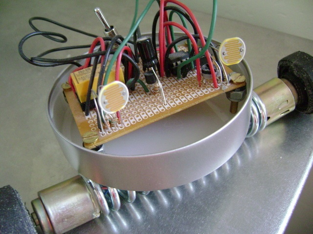
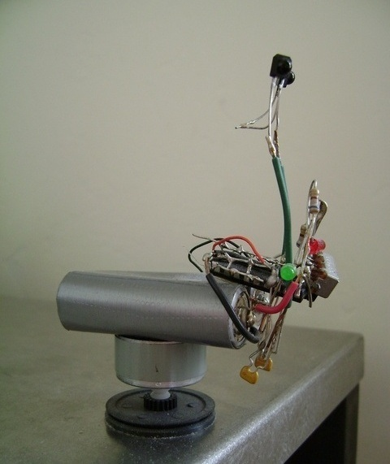
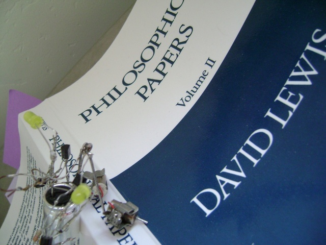
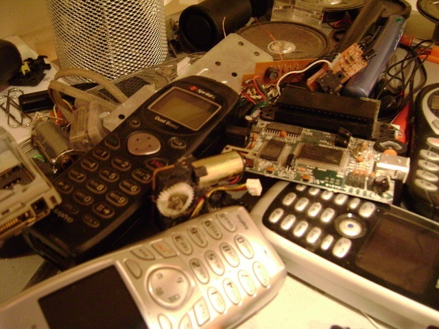

...a solar-powered rolling robot, made from recycled parts of other electronic devices. The brain uses a capacitor from an old VCR, two solar panels from a calculator, wires from a desktop computer monitor, and a switch from a metronome, among other things. The body is made from an Illy coffee can top, appropriately modified with a power drill, and a spring from a door. The wheels are duct tape-wrapped motors from an analog cassette tape player.

... a swiveling, light-seeking robotic head.

On the lookout for counterexamples: a light-sensitive, vibrating robotic fly, built entirely from the parts of the gutted cell phones below. (Constitution at work?)
